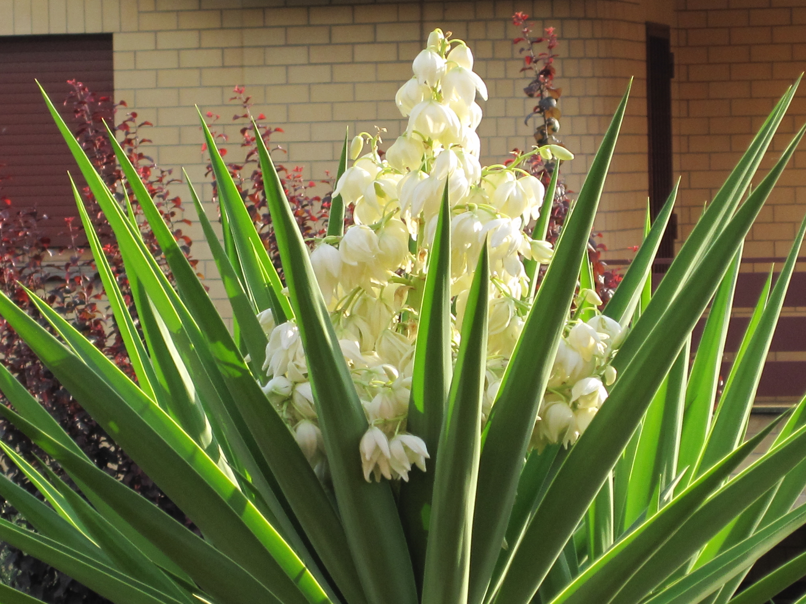
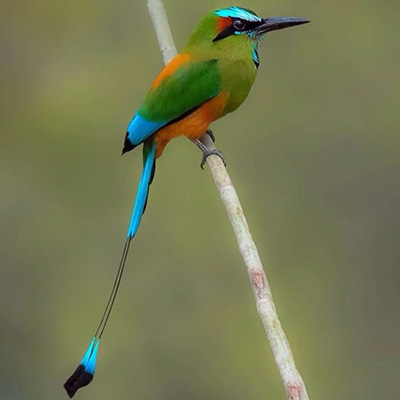
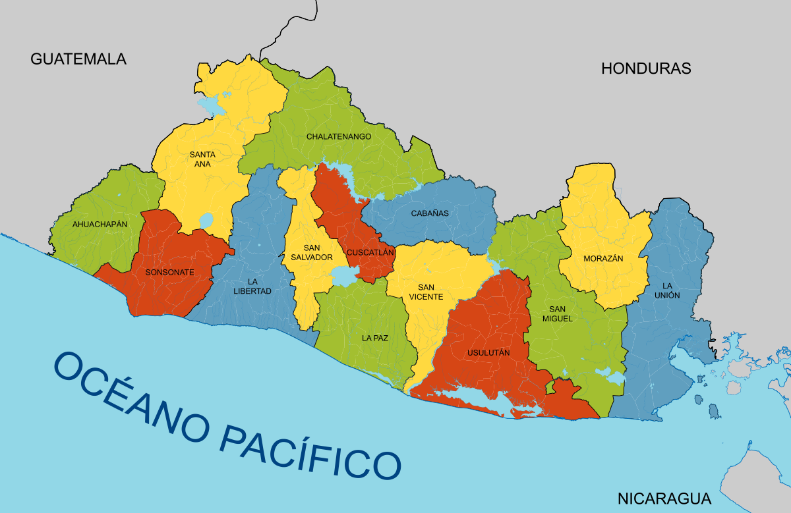
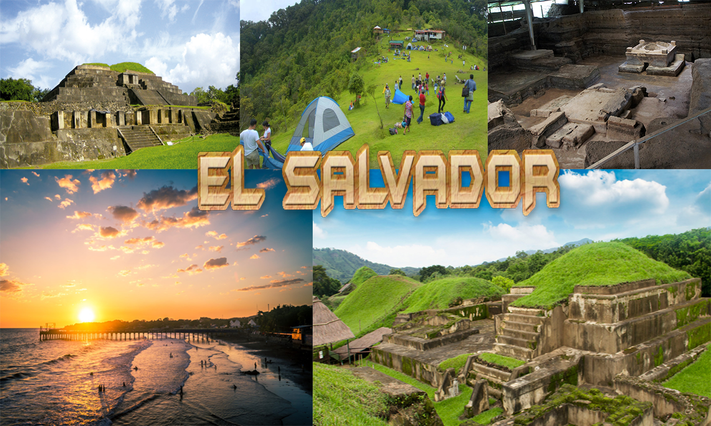

Simbolos patrios

Bandera
La bandera de El Salvador es un paralelogramo de tela compuesto de
tres franjas horizontales: la primera y la tercera azules y la del
centro color blanco. Sus dimensiones oficiales son 3.25 metros de
largo por 1.89 de ancho. Cada franja mide 0.63 de ancho

Escudo
El Escudo de El Salvador fue creado junto con la actual Bandera Nacional
por el Decreto Legislativo del 17 de mayo de 1912, siendo Presidente de la
República el doctor Manuel Enrique Araujo. Fue diseñado por el calígrafo
salvadoreño Rafael Barraza Rodríguez, que se impuso sobre treinta competidores
en un concurso promovido por el entonces Ministerio de Guerra y Marina, en 1912.

Flor nacional
La flor de Izote fue reconocida oficialmente como “Flor Nacional de El Salvador”,
por la Asamblea Legislativa, el 21 de diciembre de 1995.
Es una planta que florece entre abril y mayo; tiene varios tallos y hojas alargadas,
originaria de la región de Mesoamérica, pertenece a la familia de los Liliáceos y a
la orden de las Liliflorales, que comprenden muchos géneros y especies.

Árbol nacional
Los árboles de Bálsamo y Maquilishuat fueron declarados “Árboles Nacionales de la República”,
en 1939, mediante un decreto ejecutivo, que establecía además, el 22 de junio de cada año como
“Día del Árbol Nacional”. Esta disposición fue ratificada en 1940 por la Asamblea Nacional Legislativa,
encargándole al entonces Poder Ejecutivo, en el ramo de Agricultura, el cumplimiento del decreto.

Animal nacional
El Torogoz fue declarado oficialmente como “Ave Nacional de El Salvador”, en octubre de 1999.
Para esta distinción se tomó en cuenta tanto su singular belleza, que radica principalmente
en la variedad de colores de su plumaje, como por su simbolismo, ya que es un ave inadaptable
al cautiverio y representa la unidad familiar, por la participación en pareja en el cuidado de
sus pichones. Con la declaratoria se exhorta a preservarlo del exterminio y fomentar su protección.
Historia
La civilización de El Salvador data de la época precolombina, alrededor de 1500 años A.C., según lo evidencia las ruinas de Tazumal y Chalchuapa. Los primeros habitantes fueron los Pocomames, Lencas, y Pipiles, que se asentaron en las zonas centrales y occidentales del país a mediados del Siglo XI.
El Almirante Español Andrés Niño condujo una expedición a Centro América y desembarcó en la Isla Meanguera, localizada en el Golfo de Fonseca, el 31 de mayo de 1522. Este fue el primer territorio salvadoreño visitado por los españoles.
Durante los años siguientes, el país evolucionó bajo dominio español. Hacia fines del año 1810 surgió un sentimiento de libertad entre los pueblos de Centroamérica y el momento de romper las cadenas de esclavitud llegó en la madrugada del 5 de noviembre de 1811, cuando el Sacerdote José Matías Delgado, replicó las campanas de la Iglesia La Merced en San Salvador, haciendo un llamado a la insurrección. Después de muchas luchas internas, se firmó el Acta de Independencia de Centroamérica en Guatemala, el 15 de septiembre de 1821. Este día conmemoramos el Día de la Independencia de nuestra tierra Cuzcatleca.

Extención territorial
21.041 km²

Lugares turisticos en el salvador
- Lago de Coatepeque
- Playa El Tunco –Tunco Beach-
- Ruta de las Flores
- Volcán Ilamatepec
- Suchitoto
- El Boquerón
Lista de departamentos